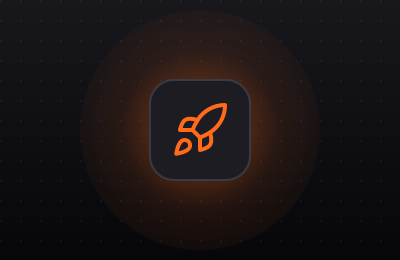

Confidentialité
Vos contrats, vos données clients et vos procédures restent sur votre infrastructure ou dans un cloud européen. Rien ne part vers un service public d’IA.
Un prototype fonctionnel sur un cas d’usage réel, mesuré avec vos équipes, pour décider en connaissance de cause avant d’investir.

Audit de vos données et de vos cas d’usage, choix de l’architecture. Une à deux semaines.
Un prototype qui fonctionne sur vos vraies données, mesuré avec vos équipes. Trois à six semaines.
Sécurité, supervision, intégration à votre SI et à vos outils. Mise en service progressive.
Formation des utilisateurs et des équipes techniques pour qu’elles restent autonomes.
Vos contrats, vos données clients et vos procédures restent sur votre infrastructure ou dans un cloud européen. Rien ne part vers un service public d’IA.
Une architecture pensée pour le RGPD et l’AI Act : journalisation, contrôle des accès, hébergement maîtrisé et documentation pour votre DPO.
Des modèles open source, sans abonnement par utilisateur ni dépendance à un fournisseur. Vous gardez la main sur les coûts et sur l’évolution de l’outil.
Parlons-en 30 minutes. Nous vous disons franchement si l’IA privée est la bonne réponse, et par où commencer.